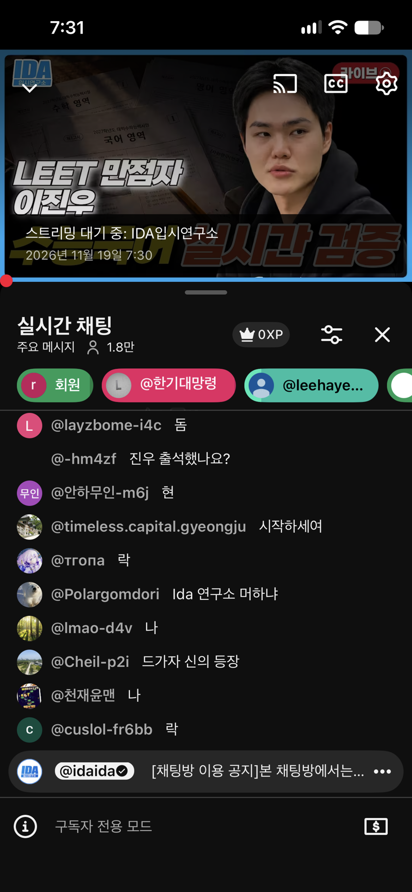

31 · 13 · 24 분 전 · 원문

리트냥이 노쇼
그래도 경기장에 나와 얼굴은 비춘 호날두
수집 당시 댓글 13개
Rhesus · 56 분 전
젖평
안흥찐빵 · 51 분 전
선생님의마음씨 · 49 분 전
사우디리그 잡놈
안녕하세요개붕입니다잘부 · 39 분 전
생각해보니 쇼는 했네
순라면진한맛 · 32 분 전
쇼날두
공두개터뜨리기 · 24 분 전
갓두(상대적)
분식삼대장 · 24 분 전
이거는 리트냥이가 날두 다음날에 런닝머신 뛴것처럼 아차산에서 패러글라이딩까지 하면 인정함
LotteGiants · 24 분 전
축구냥이
거시경제학 · 23 분 전
여기서 젖닌이 출몰하는게 맞나
오르다말아 · 15 분 전
계약한대로 했을 뿐인 킹두
비나비 · 7 분 전
얜 돈받고 노쇼했잖아ㅋㅋㅋ
ediredo · 7 분 전
항정살덮밥 · 6 분 전
그립....진 않습니다 JOAT


젖평